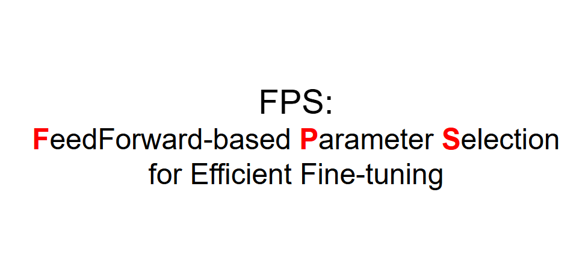

|
Kenneth Yang I am actively seeking research intern opportunities! I received my B.S. degree in Computer Science from National Tsing Hua University, where I was a Dean's List Award (Top 5%) recipient twice. During undergrad, I worked as a research assistant at Academia Sinica with Dr. Jen-Chun Lin, focusing on PEFT and multi-modal retrieval, including a ICASSP 2024 oral and a NeurIPS 2025 workshop paper. I also collaborated with Prof. Min Sun on multi-view layout estimation and assisted in organizing the First Multi-View Layout Estimation Challenge at CVPR 2023. Currently, I am a research assistant at the Vision & Learning Lab, National Taiwan University, supervised by Prof. Yu-Chiang Frank Wang, Director of NVIDIA Research Taiwan. My research centers on 3D vision and Generative models. |
{kind=link}
 NTU VLLab Research Assistant Sep '24 – Present |
 Academia Sinica Research Intern / RA Jul '23 – Dec '24 |
 NTHU VSLab Undergraduate Student Aug '23 – Jun '24 |
ResearchI'm interested in the intersection of computer vision and deep learning, particularly in PEFT (Parameter-Efficient Fine-Tuning) and 3D vision. |
|  |
FPS: Feed-Forward Based Parameter Selection for Efficient Fine-Tuning
Kenneth Yang, Wen-Li Wei, Jen-Chun Lin NeurIPS COML workshop, 2025 Poster paper Designing FPS, a novel feed-forward based parameter selection framework that identifies and updates the most impactful parameters during fine-tuning, reducing computational cost without sacrificing model performance. Delivers SOTA-comparable performance with just 10% memory usage and 2× faster parameter selection on large benchmarks like FGVC and VTAB-1k. |
|
MUSIC-TO-DANCE POSES: Learning to Retrieve Dance Poses from Music
Bo-Wei Tseng, Kenneth Yang, Yu-Hua Hu, Wen-Li Wei, Jen-Chun Lin ICASSP, 2024 Oral paper Developed a music-to-dance pose retrieval system matching 3D human poses and shapes from musical snippets, integrating novel fine-tuning techniques for cross-modal retrieval. |
|
Website template adapted from Jon Barron. You can find the original source code here. |